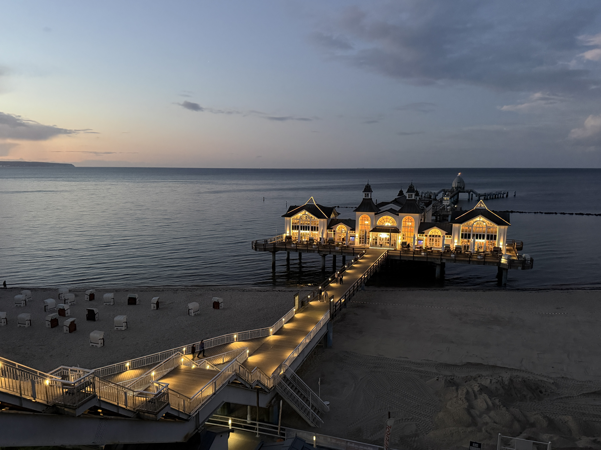

9. September 2026
Sellin

Dies ist ein automatisch erstellter Testeintrag – erzeugt aus einem Foto und einer kurzen gesprochenen Testnachricht, um die komplette Kette von Aufnahme bis Veröffentlichung zu prüfen.
9. September 2026

Dies ist ein automatisch erstellter Testeintrag – erzeugt aus einem Foto und einer kurzen gesprochenen Testnachricht, um die komplette Kette von Aufnahme bis Veröffentlichung zu prüfen.